Easy Pad Editor’s
Reference Manual
This replacement for Windows’s built–in Notepad is a fast and efficient editor. Starting with version 2.0.0.0, Easy Pad will have most, if not all, of the coding features removed.
If you are looking for the full-featured code editor version of Easy Pad, Look for Curly Pad, which is currently under construction and may not be available for some time. Curly Pad will have all of the coding features that Easy Pad has lost, and more!
Easy Pad’s main window:
Table of Contents
The menu has five items: “File”; “Edit”; “View”; “Options”; and “Help”. All five of these items have accelerator keys. All menu items have either accelerator keys (when they have sub–subitems) or keyboard shortcuts.
New (CTRL+n)
“New” clears all text from the text box; if there is any text already in the text box, you will be offered the chance to save it.
New Window (CTRL+SHIFT+n)
“New Window” opens a new, empty Easy Pad window.
Open… (CTRL+o)
“Open…” opens a file requester allowing the user to choose a text file to open.
Recent (ALT+R)
“Recent” has a variable number of sub–subitems. Each of these items displays a fully qualified path to a recently edited text file. The maximum total number of items this list is adjustable by the user (1 minimum, 50 maximum). Files which no longer exist on disc you will be automatically removed from the list.
Save (CTRL+s)
“Save”
Save As… (CTRL+SHIFT+s)
“Save As…” opens a file requester allowing the user to name the text file to be saved and select its folder.
Save And Exit (SHIFT+F4 the shifted function 4 key)
“Save And Exit” saves the current file and immediately closes Easy Pad. If necessary, it opens a file requester allowing the user to name the new text file to be saved and select its folder.
Page Set Up… (CTRL+j)
“Page Set Up…” opens the Windows built–in Page Setup dialog.
Print… (CTRL+p)
“Print…” opens the Windows built–in Print dialog.
Exit (ALT+F4)
“Exit” closes Easy Pad; if there is any text already in the text box, you
will be offered the chance to save it.
Undo (CTRL+z)
“Undo” undoes the last editing action. The undo stack is virtually unlimited (limited only by the amount of RAM in the computer).
Redo (CTRL+y)
“Redo” restores the last undone editing action. The redo stack is virtually unlimited (limited only by the amount of RAM in the computer).
Cut (CTRL+x)
“Cut” deletes the selection (moving it to the Clipboard); if nothing is selected nothing will be deleted.
Copy (CTRL+c)
“Copy” copies the selection (moving it to the Clipboard); if nothing is selected nothing will be copied.
Copy All(CTRL+SHIFT+c)
“Copy All” copies all text (moving it to the Clipboard); any selection will be ignored.
Copy To Beginning (CTRL+SHIFT+HOME the control shifted {HOME} key)
“Copy To Beginning” copies all text from the current cursor to the very beginning of the text (moving it to the Clipboard); any selection will be ignored.
Copy To End (CTRL+SHIFT+END the control shifted {END} key)
“Copy To End” copies all text from the current cursor to the very end of the text (moving it to the Clipboard); any selection will be ignored.
Paste (CTRL+v)
“Paste” moves the Clipboard ’s textual contents into the text box at the current caret location. If there is no text content on the Clipboard nothing will be pasted.
Delete (Del the {DELETE} key)
“Delete” deletes the current selection or, if nothing is selected,the character immediately following the carrot location is deleted.
Trim To Beginning (CTRL+SHIFT+DEL the control shifted {DELETE} key)
“Trim To Beginning” cuts all text from the current cursor to the very beginning of the text (moving it to the Clipboard); any selection will be ignored.
Trim To End (CTRL+ALT+END the control alternate {END} key)
“Trim To End” cuts all text from the current cursor to the very end of the text (moving it to the Clipboard); any selection will be ignored.
Search With Google… (CTRL+e)
“Search With Google…” open your preferred browser to the Google Advanced Search page. If something is selected in the text box, that selection will be copied to the Clipboard and thereafter pasted into the “all these words:” text field.
Find… (CTRL+f)
“Find…” opens the The Find Dialog.
Find Next (F3 the number three function key)
“Find Next” finds (forward) the next existing instance of the last string searched for with the Find dialog.
Find Previous (SHIFT+F3 the shifted number three function key)
“Find Previous” finds (backwards) the previous existing instance of the last string searched for with the Find dialog.
Both “Find Next” and “Find Previous” wrap around. If the currently found item is the last one in the text, and you asked to “Find Next”, it will find the first such text. Similarly, if the currently found item is the first one in the text, and you asked to “Find Previous”, it will find the last such text.
Replace… (CTRL+h)
“Replace…” opens the The Search And Replace Dialog
Go To… (CTRL+g)
“Go To…” opens the The Go To Dialog.
Select All (CTRL+a)
“Select All” selects the entire content of the text box.
Select None (CTRL+SHIFT+a)
“Select None” removes any selection from the text box.
Word Wrap (CTRL+w)
“Word Wrap” is a toggle. When checked, word wrapping is turned on and there will be no horizontal scrollbar. When not checked, word wrapping is turned off and there will be a horizontal scrollbar.
Always On Top (CTRL+SHIFT+t)
“Always On Top” is a toggle. When checked, Easy Pad will do its best to force itself to stay on top of all other windows. When not checked, Easy Pad will act in the traditional manner of ducking behind other active windows.
Windows is not a big fan of this “Always On Top” behavior! If two (or more) applications request this behavior the results will be unpredictable.
Fade In (CTRL+i)
“Fade In” is a toggle. When checked, Easy Pad’s will fade in over a very brief period of time at launch. This may help eyestrain and reduce flickering and flashing.
Zoom In (CTRL++ either the plus key on the number pad or keyboard)
“Zoom In” increases the size of the text box font by one point.
Zoom Out (CTRL+- either the minus/hyphen key on the number pad or keyboard)
“Zoom Out” decreases the size of the text box font by one point.
Zoom Default (CTRL+0)
“Zoom Default” restores the size of the text box spot to the last size specifically chosen by the user (not including the use of “Zoom In” nor “Zoom Out”). By default, this is 11 points.
Wheel (ALT+O opens the Wheel subitem)
“Wheel” has six subitems: Up, Down, Faster, Slower, Velocity… and Quit Scrolling. Each controls the respective scrolling behavior – Up start scrolling the text upwards; Down start scrolling the text downwards; Faster increases the scrolling speed; Slower decreases the scrolling speed; Velocity opens the scrolling speed dialog; Quit Scrolling causes the text to stop scrolling.
This feature is currently under construction and may or may not work.
Opacity (ALT+O opens the Opacity subitem)
“Opacity” has four subitems: 30%; 50%; 75% and Opaque. Each controls the amount of opacity(transparency/translucency) of the main window. This might be useful if you are using Easy Pad to edit the text in an underlying application.
30% (ALT+3, CTRL+SHIFT+3) is extremely transparent (can easily be seen through).
50% (ALT+5, CTRL+SHIFT5) is moderately transparent.
75% (ALT+7, CTRL+SHIFT+7) is barely transparent.
Opaque (ALT+O, CTRL+SHIFT+1) is completely opaque (may not be seen through).
Dark Theme (CTRL+d)
“Dark Theme” is a toggle. When its checked state changes (from on to off or off to on), it forces the entire color scheme to change. This completely overrides any custom color changes made by the user. The dark mode (checked) is white on black and the other mode is black on white.
Status Bar (CTRL+B)
“Status Bar” is a toggle. When checked, the “status bar” at the bottom of the main window is visible; otherwise it is hidden.
Tool Bar (ALT+T opens the Toolbar subitem)
The numerous menu subitems control the way the toolbar looks. Images of these various sizes and locations may be seen here.
Show Toolbar (ALT+S, CTRL+k) is a toggle. When checked, the toolbar is visible, otherwise it is hidden.
The Tool Bar Location Section
Top (ALT+T, CTRL+l), when selected, places the toolbar at the top.
Bottom (ALT+B, CTRL+m), when selected, places the toolbar at the bottom.
Left (ALT+L, CTRL+q), when selected, places the toolbar at the left.
Right (ALT+R, CTRL+r), when selected, places the toolbar at the right.
The Tool Bar Size Section
16 (ALT+1, CTRL+1) — the icons are approximately 16 pixels wide and tall.
24 (ALT+2, CTRL+2) — the icons are approximately 24 pixels wide and tall.
32 (ALT+3, CTRL+3) — the icons are approximately 32 pixels wide and tall.
64 (ALT+6, CTRL+6) — the icons are approximately 64 pixels wide and tall.
128 (ALT+8, CTRL+8) — the icons are approximately 128 pixels wide and tall.
The subitems of the Options menu control the look, feel and behavior of Easy Pad.
Interface Font… (CTRL+SHIFT+f)
The “Interface Font…” subitem opens the Windows built–in font picker dialog. This dialog is not very Dragon–friendly! A truly Dragon–friendly font picker is available; there are details here. The Windows built–in font picker allows the user to change the color of the font but, again, choosing is not easy using Dragon. A Dragon–friendly color picker is available; there are details here.
Interface Background Color… (CTRL+SHIFT+b)
The “Interface Background Color…” subitem opens the Windows built–in color picker dialog. This dialog is not very Dragon–friendly! A completely Dragon–friendly color picker is available; there are details here.
Text Font… (CTRL+SHIFT+ALT+f)
The “Text Font…” subitem opens the Windows built–in font picker dialog. This dialog is not Dragon–friendly! A uniquely Dragon–friendly font picker is available; there are details here. The Windows built–in font picker allows the user to change the color of the font but, again, choosing is not easy using Dragon. A Dragon–friendly color picker is available; there are details here.
Text Background Color… (CTRL+SHIFT+ALT+b)
The “Text Background Color…” subitem opens the Windows built–in color picker dialog. This dialog is not Dragon–friendly! A Dragon–friendly color picker is available; there are details here.
External Font Picker (ALT+F)
The “External Font Picker” operates in one of two modes: it can either present every font installed on the computer or it can display all of the monospaced fonts. When presenting every font (especially when there are many fonts installed) creating the dialog might take as much as thirty seconds.
This dialog does not allow the user to specify a size nor a color.
For Interface… (ALT+I, CTRL+SHIFT+ALT+I)
“For Interface…” allows the user to choose the interface font using the external font picker. All installed fonts will be offered.
Monospaced Textbox Font… (ALT+M, CTRL+SHIFT+ALT+N)
“Monospaced Textbox Font…” allows the user to choose the interface font using the external font picker. Only monospaced (non–proportional) installed fonts will be offered.
Both the interface and text box fonts’ sizes may be set individually using the font size dialog.
Windows’ built-in font picker:
Not Dragon-friendly!
External Color Picker (ALT+F)
The “External Color Picker” offers the user the choice of all known named colors. Currently, there are over 160 known named colors; these colors are defined by Windows, if this list were to change those changes would be recognized each time the dialog is started.
IInterface Font Color… (ALT+I, CTRL+SHIFT+ALT+j)
“IInterface Font Color…” allows the user to choose the interface font color using the external color picker.
For Interface Background Color… (ALT+B, CTRL+SHIFT+ALT+k)
“IInterface Background Color…” allows the user to choose the interface background color using the external color picker.
Text Font Color… (ALT+T, CTRL+SHIFT+ALT+p)
“Text Font Color…” allows the user to choose the text box font color using the external color picker.
Textbox Background Color… (ALT+C, CTRL+SHIFT+ALT+q)
“Textbox Background Color…” allows the user to choose the text box background color using the external color picker.
Status Strip Background Color… (CTRL+SHIFT+ALT+a)
“For Status Strip Background Color…” allows the user to choose the status strip background color using the external color picker.
For Dialog Background Color… (CTRL+SHIFT+ALT+y)
“For Dialog Background Color…” allows the user to choose the dialog background color using the external color picker.
Status Strip Background Color… (CTRL+ALT+SHIFT+z)
The “Status Strip Background Color…” menu item opens the Windows built–in color picker dialog to change the status strip background color. This dialog is not very Dragon–friendly!
Dialog Background Color… (CTRL+ALT+SHIFT+o)
The “Dialog Background Color…” menu item opens the Windows built–in color picker dialog to change the various dialogs background color. This dialog is not very Dragon–friendly!
Windows’ built-in color picker:
Not Dragon-friendly!
Recent Files History Limit… (CTRL+ALT+SHIFT+l)
The “Recent Files History Limit…” menu item opens a dialog allows in the user to change the maximum number of items in the “Recent” sub–subitem list. The user can choose any number from 1 to 50, inclusive. The default is 10.
Font Sizes (ALT+F)
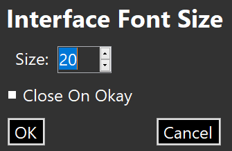
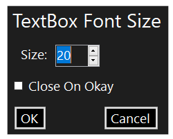
“Font Sizes” has two items: “Interface Size…” and “Text Size…”.
Interface Size… (CTRL+ALT+SHIFT+xj) opens a simple numeric dialog allowing the user to change the size of the interface font. The user can choose any size from 6 points to 72 points, inclusive. The default is 11 points.
Text Size… (CTRL+ALT+SHIFT+vj) opens a simple numeric dialog allowing the user to change the size of the text font. The user can choose any size from 6 points to 72 points, inclusive. The default is 11 points.
The Help Menu (ALT+H or F1 the number one function key )
Help (ALT+H or F1 the number one function key )
“Help” opens this Help HTML file in the user’s preferred browser.
The 16x16 toolbar with scroll buttons:
The 16x16 toolbar without scroll buttons:
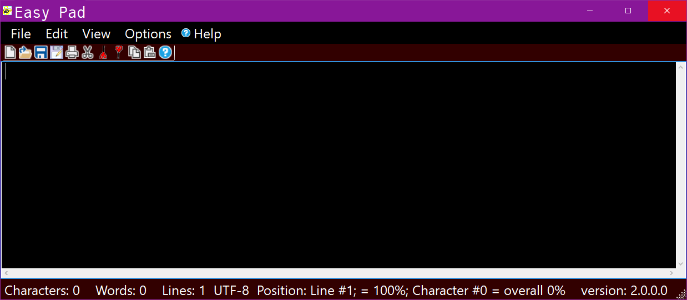
The 16x16 toolbar without scroll buttons – docked bottom:
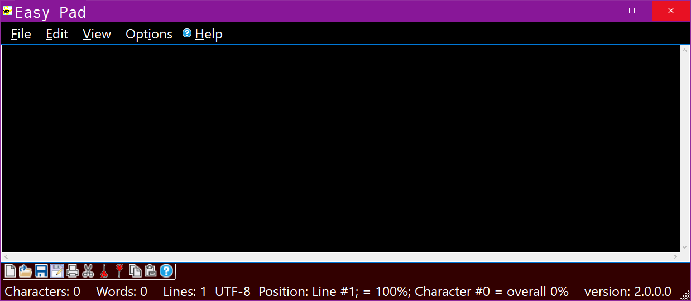
The 16x16 toolbar with scroll buttons – docked left:
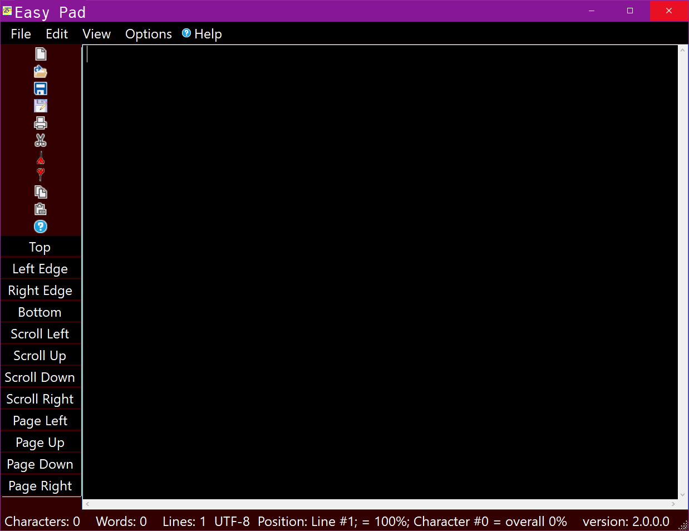
The 16x16 toolbar without scroll buttons – docked left:
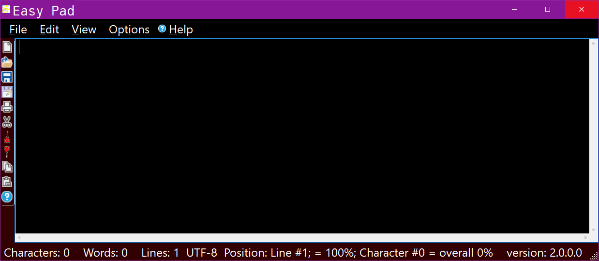
The 16x16 toolbar without scroll buttons – docked right:
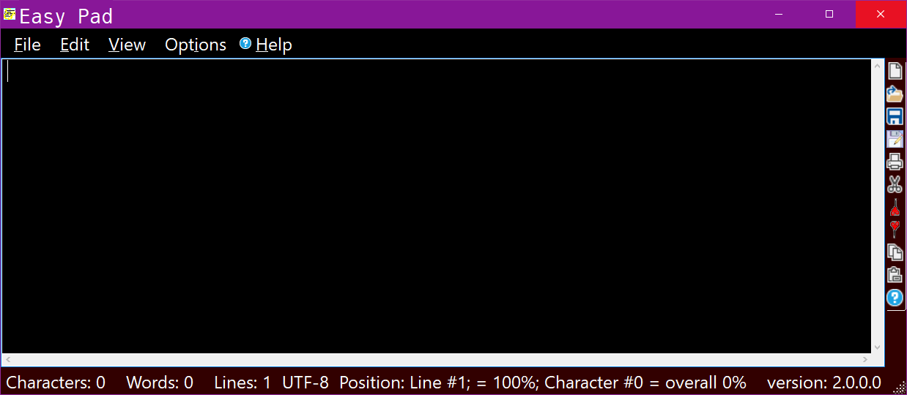
The 24x24 toolbar with scroll buttons:
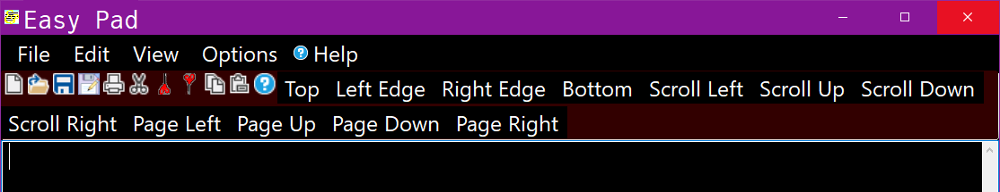
The 24x24 toolbar without scroll buttons:
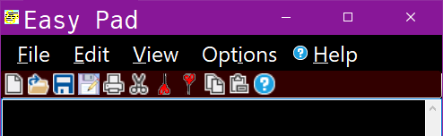
The 32x32 toolbar with scroll buttons:
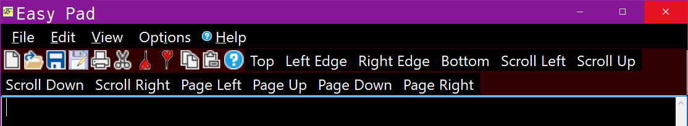
The 32x32 toolbar without scroll buttons:
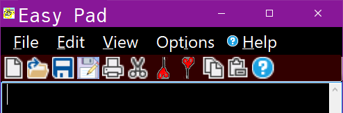
The 64x64 toolbar with scroll buttons:
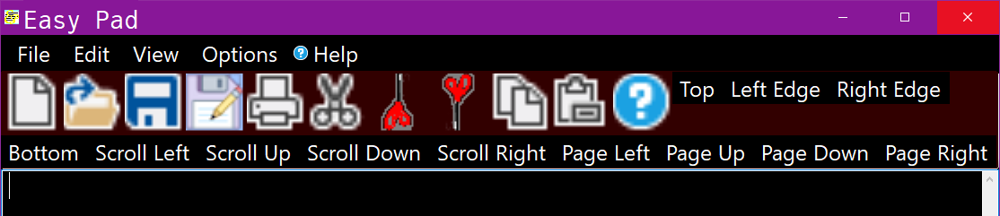
The 64x64 toolbar without scroll buttons:
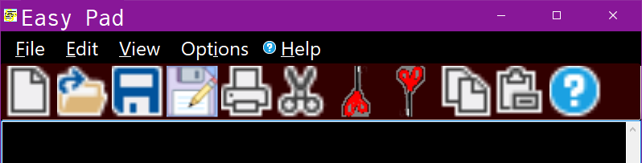
The 128x128 toolbar with scroll buttons:
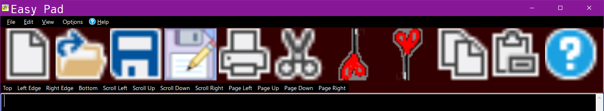
The 128x128 toolbar without scroll buttons:
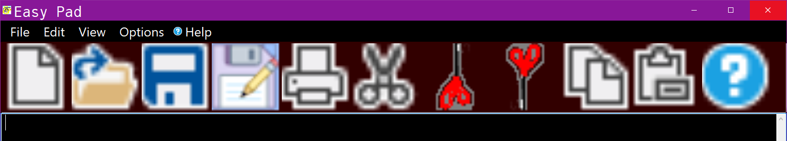
The 128x128 toolbar wrapped without scroll buttons:
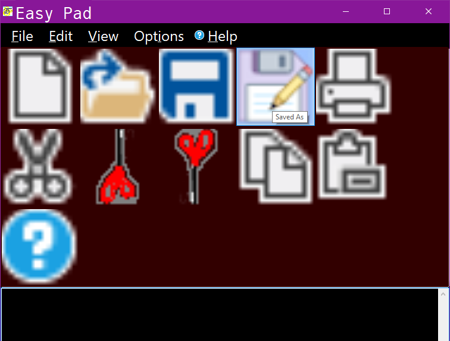
Alternate Toolbar Locations
The 16x16 Toolbar on the bottom:
The 16x16 Toolbar on the bottom without scroll buttons:
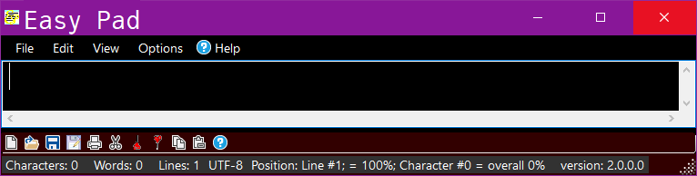
The 16x16 Toolbar on the bottom with scroll buttons:
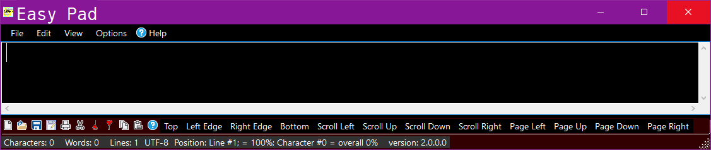
The 16x16 Toolbar on the left:
The 16x16 Toolbar on the right:
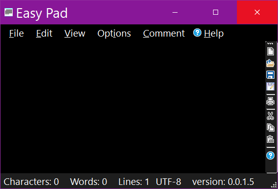
New (ALT+N)
For details about the what the “New” icon does, see here.
Open (ALT+O)
For details about the what the “Open” icon does, see here.
Save (ALT+S)
For details about the what the “Save” icon does, see here.
Save As (ALT+A)
For details about the what the “Save As” icon does, see here.
Print (ALT+P)
For details about the what the “Print” icon does, see here.
Cut (ALT+u)
For details about the what the “Cut” icon does, see here.
Copy (ALT+y)
For details about the what the “Copy” icon does, see here.
Paste (Ctrl+v …Paste… has no keyboard accelerator key)
For details about the what the “Paste” icon does, see here.
Help (ALT+H or F1 the number one function key )
“Help” opens this Help HTML file in the user’s preferred browser. It is always at the extreme right end of the toolbar.
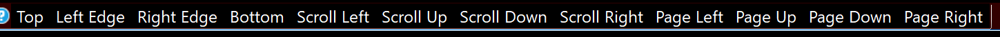
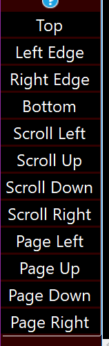
Top (ALT+T)]
“Top” moves the view to the top of the document. The first line of the text will be at the top of the text box.
Left (ALT+L)]
“Left” moves the view to the left of the document. The text will shift to the right so that the first column is at the left edge of the text box.
Right (ALT+R)]
“Right” moves the view to the right of the document. The text will shift to the left so that the last column is at the right edge of the text box.
Bottom (ALT+b)]
“Bottom” moves the view to the bottom of the document. The last line of the text will be at the bottom of the text box.
[Details…New (ALT+N)]
[ details… ]
[Details…New (ALT+N)]
[ details… ]
[Details…New (ALT+N)]
[ details… ]
[Details…New (ALT+N)]
[ details… ]
[Details…New (ALT+N)]
[ details… ]
[Details…New (ALT+N)]
[ details… ]
[Details…New (ALT+N)]
[ details… ]
[Details…New (ALT+N)]
[ details… ]
The Status Bar displays the number of characters, words, and lines; it displays the text encoding (e.g. UTF–8). It also displays the relative position of the cursor — the line number (and its approximate percentage position from the top), the character number (and its approximate percentage position from the top) and the overall percentage (from the top). The four–digit Easy Pad version number is the last status item.
The accuracy of the approximate percentage positions can be inaccurate when wordwrap is turned on. The overall percentage is generally fairly accurate.
The “Find” dialog has a single text entry field – enter the phrase for which you wish to search in this text box. To the right of the text box is the “Find Next” button; when clicked, using the criteria specified in the “Options” and “Scope” GroupBoxes, the next instance of this phrase will be brought into view and highlighted. This “Find” dialog will close automatically if the phrase is found; if it is not found the dialog will remain open. Clicking the Cancel button will close this dialog without searching for anything.
The “Options” GroupBox presents the user with three CheckBoxes: “Match Case”; “Regular Expressions” and “Whole Word”.
“Match Case”, when checked, forces the search to be case-sensitive (e.g. when checked, “something” will not match with “Something”; when not checked they will match).
“Regular Expressions”, when checked, allows the use of Regular Expressions when searching.
The Microsoft Regular Expressions tutorial may be found here.
“Whole Word”, when checked, forces the search to be limited to whole words (e.g. when checked, if you search for “some” it will not find “something”).
Currently, “Whole Words” is only implemented for “Regular Expressions”. Note that it is displayed underneath “Regular Expressions” and slightly indented. When this feature is implemented for all searches it will be moved above “Regular Expressions” and not indented.
The “Scope” GroupBox presents the user with two RadioButtons: “Selection” and “Global”. These items are mutually exclusive – only one may be selected.
“Selection”, when selected, forces the search to be restricted to the selection – if nothing is selected, nothing will be found.
“Global”, when selected, forces the entire text to be searched.
The Search And Replace Dialog
The “Search And Replace” dialog has two text entry field – enter the phrase you wish to replace in the “Search For:” text box; enter the replacement phrase in the “Replace With:” text box. To the right of these text boxes are the “Replace” and “Replace All” buttons. Wwhen clicked, the “Replace” button (using the criteria specified in the “Options” and “Scope” GroupBoxes) replaces the next instance of the phrase with the replacement phrase. The “Replace All” button replaces all instances of the phrase with the replacement phrase. This “Search And Replace” dialog closes automatically if any phrase is replaced; if nothing is replaced the dialog will remain open. Clicking the Cancel button will close this dialog without replacing anything.
The “Options” and “Scope” GroupBoxes preform exactly like those in the Find dialog; details may be found here (Options GroupBox) and here (Scope GroupBox).
The “Go To” dialog allows the user to bring a specific line into view. This is only useful if the user knows the line number for the line of interest.
Experimental code has been removed which added rudimentary line numbering functionality. Getting this working completely and correctly has proved very challenging! The feature may return in some future version.
The Font Size dialog allows the user to adjust the size of either the interface (GUI) or text box font. This may be done dynamically or statically. When the “Close On Okay” is checked, the behavior will be static (the dialog will close when the “OK” button is clicked). When it is not checked, the behavior is dynamic – the font size change is applied but the dialog remains open so that additional sizes may be tried.
The minimum font size is eight (8); the maximum font size is five hundred twelve (512).
Larger font sizes may be achieved for the text box using the “Zoom In” feature or controlled mouse wheel scrolling.
The Maximum File History Dialog
The Maximum File History dialog allows the user to control the maximum number of recently opened files which are displayed and stored. The minimum value is zero (0 – effectively turning the feature off), the maximum value is fifty (50).
Each Theme remembers these features:
Theme Name
Text Box Font
TextBox Font Color
TextBox Background Color
Interface Font
Interface Font Color
Interface Background Color
Status Bar Background Color (also controls Toolbar Background Color)
Dialog Background Color
The Create Theme dialog allows the user to give a name to the currently existing theme options. Theme names must be unique, they are not case-sensitive. Themes are stored in a plain text file located in the users “Documents” folder, in a subfolder called: “Easy_Pad_Data”. There is no limit to the number of themes which may be created.
The Edit Theme picker dialog presents all of the existing themes (except “Dark” and “Light” – which are built-in and may not be edited). Choosing any of these opens the actual theme editor dialog.
The Theme Editor dialog presents the selected theme for editing. All of the theme’s features may be changed. Each color swatch reflects the color associated with the button immediately to its left. These color swatches may be clicked just like the button to which it is associated.
This dialog’s layout design may change slightly in the future. Status Bar background color and dialog background color items might move into the Interface GroupBox.
The Remove Theme dialog presents all of the existing themes (except “Dark” and “Light” – which are built-in and may not be removed). Choosing any of these immediately removes the theme – this is a destructive action and may not be undone.
The Question/Response Dialog
This is a generic question/response dialog with three buttons: “Yes”, “No” and “Cancel”. The user will be presented with some information then asked a “Yes”–“No” question. If a response is required, the “Cancel” will either be hidden or disabled.
This “Cleaner” will remove Easy Pad’s cache folder(s) and its recent file history. You may preserve your recent files history by renaming its text file which is located in the folder in which Easy Pad is installed. The file name is: “RecentFileHistory.txt”–just rename it to something obvious like “XRecentFileHistory.txt” before you run the “Cleaner”; then, after the cleaner has finished, rename it back to its original name: “RecentFileHistory.txt”.